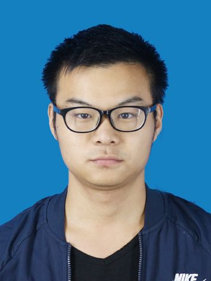

Jingcheng Yuan
Doctoral Candidate
School of Cyber Science and Engineering, Wuhan University
Airport Port Economic and Technological Development Zone, Wuhan, Hubei Province, 430010
jcyuan@whu.edu.cn
Profile
I am currently a doctoral candidate in NLP Lab, School of Cyber Science and Engineering, Wuhan University, supervised by Prof. Donghong Ji. Before that, I receiver My Master's degree at East China University of Technology.
My research direction is Natural Language Processing(NLP), concrete interest is constructing multimodal model to supply the understanding of text, specially include:
Information Extraction,
Multimodal model design,
Singlemodal Representation Construction,
Multimodal Representation Fusion.
My interest needs more Discuss, If you are doing same research, welcome to discuss with me!
publications
Jingcheng Yuan, Zhibo Wang. 区块链共识算法发展研究. 在审
Patents
Zhibo Wang, Jingcheng Yuan, Yueshun He. 基于大数据分析技术对环境质量进行监测的方法. 公开
Projects
Awards
• 2019.10 东华理工大学研究生学业一等奖学金
• 2019.10 江西省研究生数学建模二等奖
• 2020.10 东华理工大学研究生学业二等奖学金
• 2021.10 东华理工大学研究生学业二等奖学金
2022.3 大学生英语 6 级证书
Skills
Languages:
大学生英语 6 级(speak freely)
Code:
Python, Java, C/C++, R, Go, HTML/CSS, Shell, Latex,Markdown, ...
Deep Learning:
Pytorch